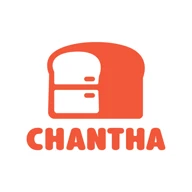
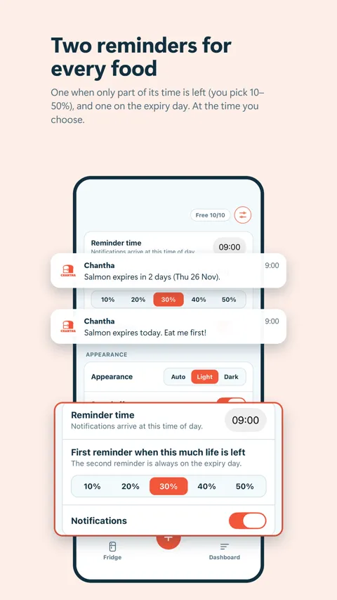

กินของที่ใกล้หมดอายุก่อน
Chantha เป็นแอปจดของในตู้เย็นสำหรับ iPhone เพิ่มของที่ใส่ตู้เย็น เลือกวันหมดอายุ แล้วแอปจะบอกว่าควรกินอะไรก่อน และเตือนคุณก่อนอาหารหมดอายุ

ChanthaChantha เป็นแอปจดของในตู้เย็นสำหรับ iPhone เพิ่มของที่ใส่ตู้เย็น เลือกวันหมดอายุ แล้วแอปจะบอกว่าควรกินอะไรก่อน และเตือนคุณก่อนอาหารหมดอายุ




ใช้ฟรีได้ครั้งละ 10 รายการ ซื้อครั้งเดียวเพื่อเพิ่มได้ไม่จำกัด ไม่มีค่าสมัครรายเดือน